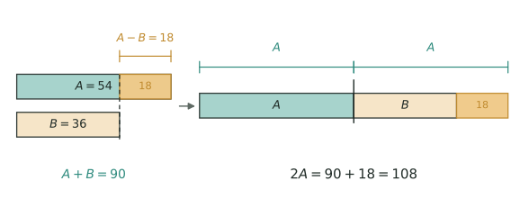
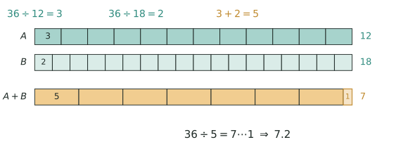
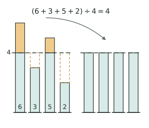
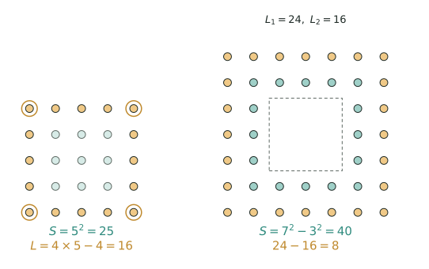
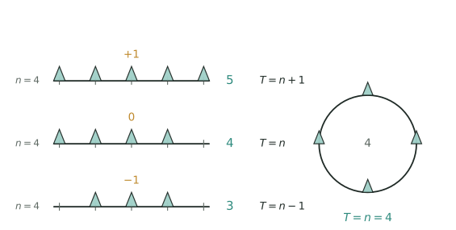
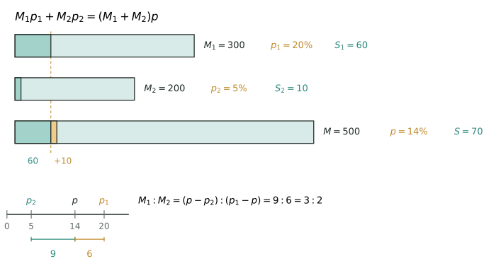
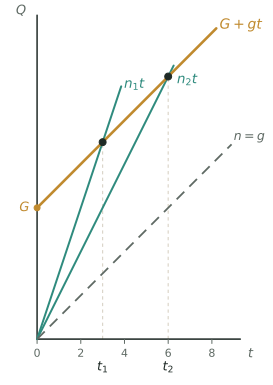
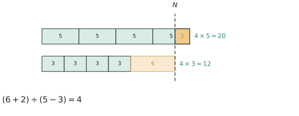
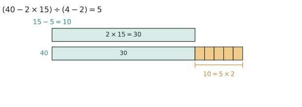

模型 已知几个数的和，又知道它们之间的倍数关系（"甲是乙的 3 倍""甲比乙的 4 倍少 8"），求各个数。做法是把作为标准的那个量（通常是"1 倍数"，即最小的量）看成 1 份，其余各量都换算成"几份"，于是"和"就等于"总份数"。核心结论只有一句：1 份 = 和 ÷ 总份数，其余量 = 1 份 × 各自份数。
写成分数形式便于套用：
$$\text{小的}=\text{和}\div(\text{倍数}+1),\qquad \text{大的}=\text{小的}\times\text{倍数}$$
求出小的之后，大的既可用"小的 $\times$ 倍数"得到，也可用 $\text{大的}=\text{和}-\text{小的}$ 得到；两式结果不同说明份数算错了，这本身就是一次免费验算。
为什么总份数是"倍数 + 1" 设乙为 1 份，甲是乙的 n 倍就是 n 份，两者合起来正好 n+1 份，而这份数与"和"一一对应。总量既被平均分成 n+1 份，每份自然是 和 ÷ (n+1)。这不是背公式，而是"总量 ÷ 总份数 = 每份"的除法意义。若甲是乙的 n 倍多 m，则甲 = n 份 + m，和里混进了一个不属于任何份的 m；先把 m 从和里拿走，剩下的才是整数份，所以是 (和 − m) ÷ (n+1)。"少 m"正相反：要给甲补上 m 才够整份，和也得跟着补，变成 (和 + m) ÷ (n+1)。记住一条：凑整的是和，不是倍数。
变形一：隐藏的和与隐藏的倍 竞赛题很少把和直接给你。周长要先除以 2 才是长与宽的和；平均数要先乘个数才是总数；"倒出、放入、借走、又买来"要先算出变化后的和。倍数同样会藏："甲除以乙商 7 余 8"就是甲是乙的 7 倍多 8；"甲比乙多 3 倍"是甲 = 4 个乙，不是 3 个乙。条件读漏一个字，份数就全错。
变形二：三个量以上的连比 先设最小的量为 1 份，顺次把每个量都换成份数。遇到"丙是甲、乙之和的 2 倍"这类说法，要先把甲、乙的份数相加"打包"成一个新量，再乘倍数。份数链一理清，题目就退化成一次除法。注意只有份数能相加，倍数本身不能相加。
变形三：不变量与倍数变化 给来给去、移多补少，总量不变；同增同减、年龄增长，差不变。倍数变了而和没变，就用变化后的和重新分份；若不变量是差，则把两个状态下"差"对应的份数统一成相同份数（取最小公倍数），再对齐比较。所谓"统一份数"，本质就是把不同标准换算成同一标准。
竞赛视角 看到"一共、共、合计、总和"配上"是……倍、比……的几倍多/少"，立刻定 1 份画线段图。和没给，先找隐藏和；两次不同分法，先找不变量；三个以上量，先做份数链。最容易混的是差倍（给差）、和差（给和与差）、按比例分配（直接给比），区分点只有一个：题目给的到底是和还是差。做完必须代回原题验算，还原类题目尤其要"正着走一遍"。
易错点
完整题目与解答见仓库
exam/answers/对应试卷文件；跨卷汇总见exam/SUMMARY.md。
裁剪即用：本页对应速查卡「应用题 02背」。下面是本节最紧的一版摘要，公式与结论与正文完全一致，用于做题前扫一遍。全套卡片见
tools/cards/build/cards.html。
和倍
$$\text{小}=\text{和}\div(\text{倍数}+1),\quad \text{大}=\text{小}\times\text{倍数}$$
差倍
$$\text{小}=\text{差}\div(\text{倍数}-1),\quad \text{大}=\text{小}\times\text{倍数}$$
✅ 识别信号：一共配上「是几倍、多几倍、商几余几」；给和用和倍、给差用差倍
⚠️ 易错：漏加 $1$、忘减 $1$；零头方向反了——多几要减、少几要加
甲、乙两数之和是 187，甲数比乙数的 4 倍少 8。甲、乙两数各是多少？
一个长方形的周长是 84 厘米，长比宽的 2 倍多 3 厘米。这个长方形的面积是多少平方厘米？
甲、乙、丙三数之和是 168。甲数是乙数的 3 倍，丙数是甲、乙两数之和的 2 倍。甲、乙、丙三数各是多少？丙比甲多多少？
甲、乙、丙三个书架共有图书 540 本。先从甲架取出 40 本放到乙架；再从乙架取出与这时甲架同样多的书放到甲架。这时甲架的书是乙架的 2 倍，丙架的书是甲架的 3 倍。原来甲、乙、丙三个书架各有多少本？

左边两段是 $A=54$ 与 $B=36$，橙色那截 18 正是 $A-B$；右边把两段接起来（总长 $90$）再补上这 18，就得到两个一样长的 54，所以 $2A=$ 和 $+$ 差 $=90+18=108$，$A=54$、$B=36$。
一句话模型：已知两个量的和与差，两个量就都被唯一确定。杯赛考的不是背公式，而是"和在哪里、差在哪里、单位是否统一"。
设大数为 $A$、小数为 $B$，则
$$A+B=\text{和},\qquad A-B=\text{差}$$
$$\Rightarrow\quad A=\frac{\text{和}+\text{差}}{2},\qquad B=\frac{\text{和}-\text{差}}{2}$$
和、差、大数、小数这四个量中，任意知道两个，其余两个都能求。这条"知二求二"比公式本身重要：竞赛题很少直接给两个数，而是给周长、平均分、总数或两两之和，要先翻译成"和"与"差"。
反过来，由大数与小数也能立刻互推，用于回代检验：$\text{大数}=\text{和}-\text{小数}$，$\text{小数}=\text{和}-\text{大数}$，且 $\text{大数}-\text{小数}=\text{差}$。任何一步算完，都要让"和"与"差"两个条件同时成立。
画线段图：大数画长段、小数画短段，两段接起来就是"和"。把小数补上"差"那么长，两段就一样长，总长变成"和 + 差"，正好是两个大数，所以除以 $2$ 得大数；把大数削去"差"，剩下的两段也一样长，总长"和 − 差"是两个小数。这就是割补。
换一个看法：先把和平均分成两份，得中间数 $\frac{\text{和}}{2}$，大数比它多"差的一半"，小数比它少"差的一半"：
$$A=\frac{\text{和}}{2}+\frac{\text{差}}{2},\qquad B=\frac{\text{和}}{2}-\frac{\text{差}}{2}$$
这个形式的用处是：差的一半，正是"移多补少"要搬动的数量。把 $\frac{\text{差}}{2}$ 从大数搬到小数，两者立刻相等；反过来，"给多少后相等"的差就是移动量的 $2$ 倍。
用数字感受一次：和 $90$、差 $18$，先平均得 $45$，再各偏 $9$，即 $54$ 与 $36$。所有和差题都能这样心算，公式忘了也不怕。
看到"共、一共、合计、总和"就想"和"，看到"多、少、相差、给、借、倒、搬"就想"差"。真正的信号是两个条件、两个未知量：只要能整理出一组"和"与一组"差"，就归入本模型。
它最容易与和倍、差倍混淆：那两类给的是倍数，本类给的是差；杯赛常把两者叠在一题里，通常先用不变量定份数，再用和差收尾。
还有一种伪装：题目只描述"变化前后"，一个具体数也不给。这时把前后两个状态各画一条线段，找出没变的那一段（总和、差或某个量），用它把两个状态接起来，例4 就是靠这一手破题的。
构造有三把钥匙：①把不等的两段割补成相等；②把多个量压成一个基准；③把会变的量换成不变量（总和不变、差不变、年龄差不变）。算完必须回代，让"和"与"差"两个条件同时成立。
完整题目与解答见仓库
exam/answers/对应试卷文件；跨卷汇总见exam/SUMMARY.md。
裁剪即用：本页对应速查卡「应用题 02正」。下面是本节最紧的一版摘要，公式与结论与正文完全一致，用于做题前扫一遍。全套卡片见
tools/cards/build/cards.html。
基本公式
$$\text{大}=\frac{\text{和}+\text{差}}{2},\quad \text{小}=\frac{\text{和}-\text{差}}{2}$$
隐藏条件
✅ 识别信号：共、合计配上多、少、相差、给、搬；两条件两未知量
⚠️ 易错：忘除以 $2$；甲给乙 $5$ 个后相等，差是 $10$ 不是 $5$
一个长方形的周长是 $64$ 厘米，长比宽多 $6$ 厘米。求它的长、宽和面积。如果把这个长方形的长减少 $4$ 厘米、宽增加 $4$ 厘米，新长方形的面积比原来多多少平方厘米？
甲、乙两筐共有苹果 $120$ 个。先从甲筐拿出 $12$ 个放进乙筐，再从乙筐拿出 $5$ 个放进甲筐，这时甲筐比乙筐多 $6$ 个。原来两筐各有多少个苹果？
甲、乙、丙三个数，甲与乙的和是 $60$，乙与丙的和是 $75$，甲与丙的和是 $65$。求这三个数，并求最大数与最小数的差。
甲、乙两筐共有苹果 $240$ 个。先从甲筐取出若干个放入乙筐，这时甲筐的个数恰好是乙筐的 $3$ 倍；如果改为从乙筐取出同样多个放入甲筐，则甲筐的个数恰好是乙筐的 $7$ 倍。原来两筐各有多少个苹果？每次移动多少个？

三行总长都是 36，代表同一件工程：第一行分 12 格、每格 3（甲每天干 3），第二行 18 格、每格 2（乙每天干 2），第三行每格 5 是两人合起来一天的活。7 整格之后只剩 1，所以 $36\div5=7$ 余 $1$，即 7.2 天。
一、模型：把"工作总量"从题目里抽掉
工程问题只有三个量：工作量、工作效率（每天完成的量）、时间，关系只有一条——工作量 $=$ 工效 $\times$ 时间。把它反解出来，三个量知二求一：
$$\text{总量}=\text{效率}\times\text{时间},\qquad \text{效率}=\text{总量}\div\text{时间},\qquad \text{时间}=\text{总量}\div\text{效率}$$
题目通常不告诉你总量是几千米、几台机器，只说"谁单独做几天完成"。总量既然未知，就把它设成 $1$：甲 $12$ 天完成，甲每天就完成 $\frac{1}{12}$。这样每支队伍都被压缩成一个数——工效。
由此得到两条结论，它们的区别是全部方法的根：
只有"同一段时间里"才能加工效，先后做只能加工作量。
二、推导：工效为什么能相加，合作为什么一定更快
设甲每天做 $a$，乙每天做 $b$，同时干 $t$ 天。甲完成 $at$，乙完成 $bt$，合计 $(a+b)t$；这与一支"每天做 $a+b$ 的队伍"干 $t$ 天的结果完全一样，所以合作工效就是 $a+b$。反过来，已知合作 $T$ 天、甲单独 $t$ 天，则 $\frac{1}{T}-\frac{1}{t}$ 就是乙的工效——"和减一个得另一个"，这是求第三方工效最省事的办法。
因为 $a+b$ 同时大于 $a$ 与 $b$，合作时间 $\frac{1}{a+b}$ 一定短于任何一方单独做的时间；又因为 $a+b\le 2a$（设甲较快），它不会短于甲单独时间的一半。这条"夹逼"是判断答案是否离谱的尺子。
总量为什么可以随便设？把总量放大 $k$ 倍，工效随之放大 $k$ 倍，二者相乘仍等于总量，时间不变。所以设 $1$ 与设公倍数得到的天数完全相同：设 $1$ 便于推理，设公倍数便于算整数。例如甲 $12$ 天、乙 $18$ 天，设总量 $36$，则甲每天 $3$、乙每天 $2$，合作每天 $5$，$36\div 5=7.2$ 天。
三、三个高级变形
四、竞赛视角
信号词很固定：单独做需…天、合作、中途离开或加入、轮流、进水管出水管、每天费用、至少/最快。看到"单独几天 $+$ 合作几天"就想和差；看到"两两合作"就想三式相加除以 $2$；看到"轮流"就想周期与取整；看到"费用 $+$ 工期"就想 $\frac{\text{每天费用}}{\text{工效和}}$。
要跟三个邻居分开：行程问题（速度 $\times$ 时间 $=$ 路程，结构同构，但相遇追及不能直接套工效相加）；牛吃草（草匀速生长相当于负工效，可"原有草量"是存量，必须单独记）；浓度问题（不变量是溶质，工程里对应的不变量是总量）。
压轴题的骨架是"定总量 $\to$ 求工效 $\to$ 画时间轴分段 $\to$ 分类或取极端"。求最短工期就让工效和最大；求最低费用先算清"完成整个工程要花多少钱"，再用工期把不可行的组合筛掉。队伍不超过三支时组合至多 $7$ 种，全列出来最稳。
五、易错点
完整题目与解答见仓库
exam/answers/对应试卷文件；跨卷汇总见exam/SUMMARY.md。
裁剪即用：本页对应速查卡「应用题 06背」。下面是本节最紧的一版摘要，公式与结论与正文完全一致，用于做题前扫一遍。全套卡片见
tools/cards/build/cards.html。
基本关系
$$\text{总量}=\text{工效}\times\text{时间}$$
两条主线
变形
✅ 识别信号：单独做要几天、合作、中途离开、轮流、进出水管
⚠️ 易错：合作不是把天数相加，而是 $1\div(\frac1{12}+\frac1{18})$
一项工程，甲、乙两队合作 $12$ 天可以完成。已知甲队每天比乙队多完成这项工程的 $\frac{1}{36}$。现在甲队先单独做 $6$ 天，然后乙队加入，两队一起做到完工。问从开工到完工一共用了多少天？
甲、乙两队合作 $10$ 天完成一项工程，乙、丙两队合作 $15$ 天完成，甲、丙两队合作 $12$ 天完成。
(1) 三队合作几天完成？
(2) 若三队先合作，中途乙队被调走，结果从开工到完工共用了 $9$ 天，乙队实际做了几天？
一项工程，甲队单独做 $24$ 天完成，乙队单独做 $36$ 天完成，丙队单独做 $18$ 天完成。现在按"甲做 $1$ 天、乙做 $2$ 天、丙做 $1$ 天"的顺序循环施工。问完工共需多少天？最后一段时间是谁在做、做了多久？如果三队自始至终同时做，能快多少天？
一项工程，甲队单独做需 $10$ 天，每天费用 $0.9$ 万元；乙队单独做需 $15$ 天，每天费用 $0.5$ 万元；丙队单独做需 $30$ 天，每天费用 $0.3$ 万元。规定：参与的队伍从开工起一直工作到完工，中途不撤出；工程必须在 $8$ 天内完成（含第 $8$ 天）。
(1) 最少需要多少费用？
(2) 若费用上限为 $8.5$ 万元，最快几天完工？

左边四根柱子是 6、3、5、2：橙色是高出 $4$ 的部分，橙色虚线框是低于 $4$ 缺的部分，两块正好一样大；把多出来的搬过去（箭头），右边四根就都成了 4，所以平均数是 $16\div4=4$。
基本关系：记总数量 $T$、平均数 $a$、总份数 $n$，三式知二求一：
$$\text{平均数}=\text{总数量}\div\text{总份数},\qquad \text{总数量}=\text{平均数}\times\text{总份数},\qquad \text{总份数}=\text{总数量}\div\text{平均数}$$
移多补少：几个数增减变化后平均数改变，抓住"总量的变化 ÷ 份数 = 平均数的变化"。份数也变时，先把两个都更新再相除：
$$\text{新平均数}=(\text{原总数量}\pm\text{变化量})\div(\text{原份数}\pm\text{变化数})$$
平均速度（最易错）：$\text{平均速度} = \text{总路程} \div \text{总时间}$，不是速度的平均数。如上山 3 km/h、下山 6 km/h 往返的平均速度不是 4.5。
完整题目与解答见仓库
exam/answers/对应试卷文件；跨卷汇总见exam/SUMMARY.md。
裁剪即用：本页对应速查卡「应用题 01背」。下面是本节最紧的一版摘要，公式与结论与正文完全一致，用于做题前扫一遍。全套卡片见
tools/cards/build/cards.html。
基本关系
$$\text{平均数}=\text{总数量}\div\text{总份数}$$
移多补少
平均速度
$$\overline v=\frac{2v_1v_2}{v_1+v_2}$$
✅ 识别信号：平均分、平均速度、去掉或加入一个数后平均数变化
⚠️ 易错：两个平均数取算术平均，只在两份数相同时才成立
小明前 4 次测验平均分是 86 分，第 5 次考了 96 分。5 次的平均分是多少？
一辆汽车往返甲乙两地，去时每小时行 40 千米，返回时每小时行 60 千米。往返的平均速度是多少？
特点：已知一组相关联的总量与份数，先求出单一量（一份是多少），再用它求新的总量或份数。"照这样计算""同样的速度"是归一问题的标志语。
三个关系式（贯穿全部归一归总题，任知其二可求第三个）：
$$\text{每份量}=\text{总量}\div\text{份数},\qquad \text{总量}=\text{每份量}\times\text{份数},\qquad \text{份数}=\text{总量}\div\text{每份量}$$
正归一：先求单一量，再求几个这样的量是多少。
$$\text{单一量} = \text{总量} \div \text{份数}，\quad \text{新总量} = \text{单一量} \times \text{新份数}$$
反归一：先求单一量，再求总量里包含几个单一量。
$$\text{新份数} = \text{新总量} \div \text{单一量}$$
关键：第一步永远是用除法求单一量。
完整题目与解答见仓库
exam/answers/对应试卷文件；跨卷汇总见exam/SUMMARY.md。
裁剪即用：本页对应速查卡「应用题 01正」。下面是本节最紧的一版摘要，公式与结论与正文完全一致，用于做题前扫一遍。全套卡片见
tools/cards/build/cards.html。
基本关系
$$\text{每份量}=\text{总量}\div\text{份数}$$
$$\text{总量}=\text{每份量}\times\text{份数}$$
正归一反归一
归总对比
✅ 识别信号：照这样计算、同样的速度、换人数换份数后的新总量
⚠️ 易错：单一量必须先求再乘；总量变了还用原来的份数
买 4 支钢笔要 36 元。照这样计算，买 9 支要多少元？
一辆汽车 3 小时行驶 180 千米。照这样的速度，行驶 420 千米需要几小时？

左边 5×5 里深橙色是最外层、浅绿是里层，四个角用圆圈标出——它们同时属于两条边，所以外层人数是 $4\times5$ 再减掉多数的 4，得 $16$。右边 7×7 挖去中心 3×3 只剩两圈：外圈 24、第二圈 16，正好差 8，总数 $7^2-3^2=40$。
一、模型：方阵里的三个量
方阵就是行数与列数相等的正方形队伍。所有方阵题只在三个量之间倒推：每边人数 $n$、层数 $m$、总人数 $S$。
把这三个量写成随取随用的形式，便是每层总数 $=($每边数 $-1)\times4$，反推每边数 $=$ 每层总数 $\div4+1$；实心方阵总数 $=$ 最外层每边数 $,^2$；空心方阵总数 $=($最外层每边数 $-$ 层数$)\times$ 层数 $\times4$。空心方阵的层数之和是等差数列，故也可写成梯形求和式：
$$S=\frac{(\text{最外层人数}+\text{最内层人数})\times\text{层数}}{2}$$
适用条件只有一条：队伍是正方形且每层排满，不缺角也不留空位。另外，边长 $n$ 与内空边长 $n-2m$ 奇偶相同，奇数边长的方阵挖不出偶数边长的空洞，这一点在判断“能不能排”时很好用。
二、推导：$4n-4$ 与差 $8$ 的来历
沿四条边数，每边 $n$ 人，共 $4n$ 人次；但四个角上的人同时属于两条边，各被数了两次，多算 $4$ 次，所以 $L=4n-4$。换一种数法核对：先数一条边的 $n$ 人，其余三边各数 $n-1$ 人，得 $n+3(n-1)=4n-4$，两法一致。
层与层差 $8$：外层每边 $n$，往里一层每边 $n-2$，两层人数相减得 $(4n-4)-[4(n-2)-4]=8$。直观地说，四边各少 $2$ 人共少 $8$ 人，四个角补回 $4$ 人，净少 $8$ 人。
中空求和：$m$ 层人数是等差数列，首项 $4n-4$，末项 $4(n-2m+2)-4$，项数 $m$，求和得
$$S=\frac{m[(4n-4)+(4n-8m+4)]}{2}=4m(n-m)$$
它还有更漂亮的来源：大正方形挖去小正方形，$n^2-(n-2m)^2=4m(n-m)$，割补一眼可见。顺带得到隔层差：跨过两层相差 $16$，因为每跨一层少 $8$。
三、三个高级变形
四、竞赛视角
看到“最外层、四周、每边、层”就调出 $4n-4$ 与差 $8$；看到“多几人、少几人、添一层、改成另一方阵”就用差量设原边长 $n$ 列方程；看到“中空、挖去中间、恰好排完”就写 $4m(n-m)$，转成因数分解加枚举。
容易混的有三处：方阵的“层”与长方形的“行”；“添一层”（边长 $+2$）与“添一行一列”（边长 $+1$）；中空方阵的层数 $m$ 与内空边长 $a$，$a=n-2m$ 而不是 $n-m$。
压轴题偏爱分类：总数给定问有几种排法，必须把 $m$ 的可能值列全，再用 $n>2m$ 和层数下限筛，最后逐一验算总人数，漏一个答案就错。求“最多几层”用 $m<\frac{n}{2}$，求“至少添几人”用余数补足，极端值往往出现在层数最大或边长最小处。
五、易错点
完整题目与解答见仓库
exam/answers/对应试卷文件；跨卷汇总见exam/SUMMARY.md。
裁剪即用：本页对应速查卡「应用题 05背」。下面是本节最紧的一版摘要，公式与结论与正文完全一致，用于做题前扫一遍。全套卡片见
tools/cards/build/cards.html。
每层人数
$$\text{每层总数}=(\text{每边数}-1)\times4$$
实心与空心
$$\text{实心总数}=\text{最外层每边数}^2$$
$$\text{空心总数}=4m(n-m)$$
✅ 识别信号：正方形队伍、最外层多少人、中空几层、添一层要几人
⚠️ 易错：最外层算成 $4n$（四角重复）；反推忘加 $1$；层差是 $8$ 不是 $4$
运动会开幕式上，某班排成一个实心方阵，最外层共有 $56$ 人。求这个方阵一共有多少人；从外往内第二层、第三层各有多少人；如果去掉最外层，剩下多少人？
一个中空方阵共 $5$ 层，总人数是 $180$。求最外层每边多少人、最内层每边多少人、最内层共有多少人，并说明中心空出的正方形有多大。
某校仪仗队排成一个实心方阵，多出 $25$ 人；如果在方阵外面再添一整层，则少 $39$ 人。求仪仗队共有多少人；再添的这一层有多少人？
用恰好 $120$ 人排成一个中空方阵，要求至少 $2$ 层，且中心必须留空（空出的正方形每边至少 $1$ 个位置）。问共有几种排法？分别写出层数与最外层每边人数。若再限定最外层不超过 $50$ 人，又有几种？

每行左边都是 4 个间隔：第一行两端各有一棵，共 5 棵（线上方标 $+1$）；第二行右端留空，4 棵（$0$）；第三行两端都空着，只剩 3 棵（$-1$）。右边圆环首尾重合，4 个间隔正好栽 4 棵。
核心概念：间隔（两棵树之间的距离）。关键是弄清"棵数"与"间隔数"的关系。
三个量的基本关系（全长、株距、段数三者知二求一）：
$$\text{全长}=\text{株距}\times\text{段数},\qquad \text{段数}=\text{全长}\div\text{株距},\qquad \text{株距}=\text{全长}\div\text{段数}$$
直线上植树三种情况（路长 ÷ 间隔长 = 间隔数）：
$$\text{两端都栽：棵数}=\text{间隔数}+1;\qquad \text{只栽一端：棵数}=\text{间隔数};\qquad \text{两端都不栽：棵数}=\text{间隔数}-1$$
按这份次序排下来，棵数随栽法依次减 $1$，画一条短线段数一遍就能定号。
封闭图形（环形）植树：首尾重合，不多不少，
$$\text{棵数}=\text{间隔数}=\text{周长}\div\text{株距}$$
变式：锯木头（锯成 $n$ 段要锯 $n - 1$ 次）、爬楼梯（上到 $n$ 楼爬 $n - 1$ 层）、敲钟（敲 $n$ 下有 $n - 1$ 个间隔）——都是"间隔数与点数"的关系。
裁剪即用：本页对应速查卡「应用题 05正」。下面是本节最紧的一版摘要，公式与结论与正文完全一致，用于做题前扫一遍。全套卡片见
tools/cards/build/cards.html。
基本关系
$$\text{全长}=\text{株距}\times\text{段数}$$
三种情形
封闭路线
$$\text{棵数}=\text{段数}=\text{周长}\div\text{株距}$$
✅ 识别信号：每隔几米栽一棵、锯木头、爬楼梯、敲钟、池塘四周
⚠️ 易错：环形与直线混用；两端都不栽棵数比段数少 $1$
① 在 100 米长的小路一边植树，每隔 5 米栽一棵，两端都栽，共栽多少棵？② 圆形池塘周长 120 米，每隔 6 米栽一棵柳树，共栽多少棵？
把一根木头锯成 6 段，每锯一次要 3 分钟，一共要多少分钟？

上面三条：浅绿是水、深绿和橙色是溶质。第一杯 300 克里有 60 克盐，第二杯 200 克里有 10 克盐，倒进同一杯后溶质正好是拼起来的那 70 克（虚线对齐 60 的刻度），宽度 $300+200=500$ 也对得上。下面把 5%、14%、20% 画在同一条线上，两段长 9 与 6 就是两杯的质量比 $3:2$——长的那段配给浓的一方。
模型：溶质（盐、糖、纯酒精）加溶剂（水）得到溶液。浓度 = 溶质 ÷ 溶液 × 100%。设溶液质量为 $M$、浓度为 $p$，则溶质 $S=Mp$，溶剂 $W=M(1-p)$。无论怎样加水、蒸发、加盐，溶液 $=$ 溶质 $+$ 溶剂这条加法式永远成立，它与 $S=Mp$、$W=M(1-p)$ 一起构成三个量的换算：
$$\text{溶液}=\text{溶质}+\text{溶剂},\qquad \text{浓度}=\frac{\text{溶质}}{\text{溶液}}\times100%,\qquad \text{溶质}=\text{溶液}\times\text{浓度}$$
题目给的两个数往往不是同一层的量（如给溶剂求浓度、给浓度求溶质），第一步永远是用这三式把"溶液—浓度—溶质"对齐到同一层。
一切计算的母公式是溶质账本：不管怎样混合、倒出、加水，各来源溶质之和等于混合后的溶质。
$$M_1p_1+M_2p_2=(M_1+M_2)p$$
推导：加水时溶质不变、溶液变大，浓度 = 溶质/溶液 是"分子不动、分母变大"，所以必然变稀；蒸发水是"分子不动、分母变小"；加盐时分子分母同时变大，靠感觉一定出错，必须设未知数列式。把溶质账本移项，得
$$M_1(p_1-p)=M_2(p-p_2)$$
即
$$\frac{M_1}{M_2}=\frac{p-p_2}{p_1-p}$$
两种溶液浓度分别为 $p_1,p_2$，且 $p_1>p>p_2$ 时，混合后的质量比可直接由上式读出：
$$\boxed{M_1:M_2=(p-p_2):(p_1-p)}$$
写成十字：
p₁ p−p₂
p
p₂ p₁−p
上差 $(p-p_2)$ 对应 $p_1$ 溶液，下差 $(p_1-p)$ 对应 $p_2$ 溶液。
例：$20%$ 盐水 300 克与 $5%$ 盐水 200 克混合，质量比为 $3:2$。设混合浓度为 $p$，则
$$(p-5):(20-p)=3:2$$
解得 $p=14$。验算：$(300\times20%+200\times5%)\div500=14%$。
十字交叉只适用于两种原料，且目标浓度必须夹在两种浓度之间；三种原料先两两合并，或直接用加权平均。加水按 $0%$、加纯盐按 $100%$ 处理；蒸发水不要硬套，直接用溶质守恒列方程更稳。
等量交换模型：两瓶各倒出 $x$ 克互换，总量与总溶质都不变，故最终公共浓度必等于总溶质÷总溶液；再对其中一瓶写"原剩溶质 + 换入溶质 = 现在溶质"，得到一个一次方程。
高级变形：
竞赛视角：看到"加水、蒸发、加盐""两种溶液混合""倒出再加满""交换等量"，第一反应找不变量（溶质、溶剂、总量、总溶质），第二反应列溶质账本。三类动作要分清：只动分母（加水、蒸发）、只动分子与分母之外的量（加溶质时水不变）、分子分母同步动（倒出溶液）。最容易混的是"浓度翻倍"与"溶质翻倍"：浓度从 10% 到 20% 并不是盐加了一倍，而是盐和溶液同时变化。多次操作先写一次操作的通式再乘方，不要一次次硬算；题目出现"至少/至多/能否"，就把某种原料用到上限做极端构造，再回来验算账本。与百分数应用题的区别在于：百分数的"单位 1"是原量，浓度的"单位 1"是溶液，溶液本身还在变，所以浓度题几乎都要设未知数或反推。
易错点：
完整题目与解答见仓库
exam/answers/对应试卷文件；跨卷汇总见exam/SUMMARY.md。
裁剪即用：本页对应速查卡「应用题 07背」。下面是本节最紧的一版摘要，公式与结论与正文完全一致，用于做题前扫一遍。全套卡片见
tools/cards/build/cards.html。
基本关系
$$\text{溶液}=\text{溶质}+\text{溶剂}$$
溶质账本
$$M_1p_1+M_2p_2=(M_1+M_2)p$$
十字交叉
$$\frac{M_1}{M_2}=\frac{p-p_2}{p_1-p}$$
✅ 识别信号：加水蒸发加盐、两溶液混合、倒出加满、交换等量
⚠️ 易错：浓度是溶质÷溶液不是÷水；两次稀释不能相减
一瓶 240 克的盐水，浓度 10%。先倒入 60 克水搅匀，再加入若干克盐，最后测得浓度恰好为 20%。问加入了多少克盐？最后盐水共多少克？
甲瓶有 300 克 20% 的盐水，乙瓶有 200 克 5% 的盐水。从两瓶各倒出相同质量 $x$ 克的盐水，把甲倒出的倒入乙、乙倒出的倒入甲，搅匀后两瓶浓度恰好相同。求 $x$，并求此时的浓度。
甲容器有 600 克 30% 的盐水。(1) 第一次倒出 150 克后加满水；第二次倒出 200 克后加满水；第三次倒出 300 克后加满水。求最终浓度。(2) 若前两次操作不变，第三次最多倒出多少克，才能使最终浓度不低于 10%？
甲、乙两瓶盐水浓度未知，甲瓶有 750 克，乙瓶有 900 克。第一次取甲 200 克与乙 300 克混合，测得浓度 14%；第二次取甲 300 克与乙 100 克混合，测得浓度 17.5%。(1) 求甲、乙两瓶的浓度。(2) 此时甲瓶只剩 250 克、乙瓶还剩 500 克，要配出 500 克 16% 的盐水，能否做到？若能则给出取法；若不能，说明理由并求出能配出的最高浓度。

橙色线从 $G$ 出发、每天涨 $g$，是草地一共能提供的草量；青色线从原点出发、斜率就是牛数 $n$，是牛群累计吃掉的草。两线相交处两边相等，交点对应的天数就是吃完的天数——$n_1$ 比 $n_2$ 大，交点就来得早，所以 $t_1<t_2$。灰色虚线 $n=g$ 与供给线平行，永远不相交，就是“永远吃不完”的临界。
模型：牧场上草每天匀速生长。设 1 头牛 1 天吃 1 份草，$n$ 头牛吃 $t$ 天共吃 $nt$ 份；原有草量 $G$ 份，每天新长 $g$ 份。核心方程是
$$nt = G + gt.$$
适用条件只有三条：草的生长（或枯萎）速度恒定、每头牛每天食量相同、草地面积不变。凡是"一边消耗、一边补充"的情境——牧场长草、检票口来人、水池进水又放水、船舱漏水又抽水——都是同一个模型。
推导：把 $nt$ 看成一个 $n\times t$ 的矩形面积，草地能提供的总草量 $G+gt$ 随天数线性增加：第 0 天是 $G$，每过一天抬高 $g$。两组"牛数—天数"就是直线上的两个点，两点定一条直线，所以 $G$ 与 $g$ 被唯一确定。代数上，由两组条件
$$n_1t_1=G+gt_1,\qquad n_2t_2=G+gt_2$$
相减消去 $G$，得
$$g=\frac{n_1t_1-n_2t_2}{t_1-t_2},\qquad G=n_1t_1-gt_1.$$
相减必须同向：若 $t_1>t_2$，分子也要用"天数多的那组减天数少的那组"。求出 $G,g$ 后，第三问无论问天数还是问牛数，都只是回代。
三步法（草在长） 设两组条件为"$n_1$ 头牛吃 $t_1$ 天"与"$n_2$ 头牛吃 $t_2$ 天"，且 $t_1>t_2$（天数越多，养得起的牛越少），按下面三步就走完一篇：
① 生长速度 $g=($少牛数 $\times$ 多天数 $-$ 多牛数 $\times$ 少天数$)\div($多天数 $-$ 少天数$)$；
② 原草量 $G=($牛数 $-$ 生长速度$)\times$ 天数；
③ 求天数 $t=G\div($牛数 $-g)$，求牛数 $n=G\div t+g$。
这就是"总供给 $=$ 总消耗"：① 定每天的补给，② 定初始存量，③ 拿 $(n-g)$ 当净消耗速度去分 $G$。
三步法（草在减） 牧场枯萎、水池晾晒属于这一型，把 $g$ 换成每天减少量 $d$，三步照做：
① 减少速度 $d=($多牛数 $\times$ 少天数 $-$ 少牛数 $\times$ 多天数$)\div($多天数 $-$ 少天数$)$；
② 原草量 $G=($牛数 $+$ 减少速度$)\times$ 天数；
③ 求天数 $t=G\div($牛数 $+d)$，求牛数 $n=G\div t-d$。
注意与前一型的符号差别：草在长时每天替牛"分担" $g$，草在减时反而每天帮牛"吃掉" $d$，所以前者用减号、后者用加号，求牛数时也正好反过来。
高级变形：
（1）草在减少与临界牛数。设每天枯萎 $d$ 份，方程改为 $nt=G-dt$，即 $t=\dfrac{G}{n+d}$。牛越多天数越少，而且无论牛多少，天数都超不过 $\dfrac{G}{d}$。草在长时则相反，$t=\dfrac{G}{n-g}$，只有 $n>g$ 才吃得完；$n=g$ 时收支相抵，永远吃不完；$n<g$ 时草越吃越多。"最多放几头牛可无限期吃"的答案就是 $g$，这是本专题最常考的临界值。
（2）面积归一。几块草地草一样密、长得一样快时，$G$ 与 $g$ 都与面积成正比。先算每公顷的 $G_0,g_0$，再乘目标面积；也可以把各块条件按面积缩放成同一块地，两种做法等价，但前者不容易漏乘。
（3）牛数分段。中途买卖牛，总草量仍按 $G+g\times$ 总天数算，牛吃掉的草按段相加 $\sum n_it_i$，两边相等列方程。分段点是牛数改变的那一天，不是"平均牛数"；若分段点本身未知，就把它设成字母，最后往往能约掉。
竞赛视角：见到两组完整条件，先定直线；只给一组条件却出现两块以上草地，九成要面积归一；见到"永远吃不完""至少吃几天""最多几头"，就是临界问题，抓住 $n=g$ 这条分界线；见到买卖牛、换牧场、白天放牛晚上割草，就分段守恒。它本质是追及问题的变装：原有草是被追的距离，新长的草是以 $g$ 逃跑的目标，牛群是以 $n$ 追赶的追者，$n-g$ 就是速度差。与工程问题要分清：工程问题总量固定，牛吃草的总量在变，不能直接用"效率 $=1\div$ 时间"。
真正的难点往往不在列式，而在读题时把"谁在变、谁不变"分清楚：草的生长速度不变，牛的食量不变，变的是牛数和天数。抓住这两个不变量，再把"总供给 $=$ 总消耗"写成等式，题目就回到了直线上的两个点。遇到"吃完后还剩"或"吃到一半又添草"，只要把总供给拆成"原有 $+$ 新长 $+$ 另添"，仍然是一次方程。
易错点：
完整题目与解答见仓库
exam/answers/对应试卷文件；跨卷汇总见exam/SUMMARY.md。
裁剪即用：本页对应速查卡「应用题 06正」。下面是本节最紧的一版摘要，公式与结论与正文完全一致，用于做题前扫一遍。全套卡片见
tools/cards/build/cards.html。
草在长
$$g=\frac{n_1t_1-n_2t_2}{t_1-t_2},\quad G=(n_1-g)t_1$$
草在减
$$d=\frac{n_2t_2-n_1t_1}{t_1-t_2},\quad G=(n_1+d)t_1$$
临界与变形
✅ 识别信号：草每天匀速生长、检票口同时来人、水池进水又放水
⚠️ 易错：把牛吃总量当原有草量；草在减时改写 $+d$
一片牧场上的草每天匀速生长。这片草可供 9 头牛吃 12 天，或供 8 头牛吃 16 天。那么可供多少头牛吃 24 天？每天新长多少份草？
深秋以后，牧场上的草不再生长，反而每天匀速枯萎。这片草可供 20 头牛吃 5 天，或供 11 头牛吃 8 天。（1）可供 8 头牛吃多少天？（2）若要保证至少能吃 20 天，最多放几头牛？
一片牧场上的草每天匀速生长，可供 10 头牛吃 30 天，或供 12 头牛吃 20 天。一群牛在这片草地上吃了 6 天后，主人卖掉 4 头牛，剩下的牛又吃了 18 天刚好吃完。原来这群牛有多少头？如果一头也不卖，这片草可供这群牛吃多少天？
三块草地面积分别为 2 公顷、4 公顷、6 公顷，草一样密，每天每公顷新长的草量相同。2 公顷的草地可供 12 头牛吃 10 天，4 公顷的草地可供 20 头牛吃 15 天。（1）6 公顷的草地可供多少头牛吃 20 天？（2）在 6 公顷的草地上先放 30 头牛吃 8 天，然后卖掉若干头牛，剩下的牛又吃 12 天刚好吃完，卖掉了多少头牛？

上面一行每人分 5，4 人共需 20，比物品多出橙色那 2（亏 2）；下面一行每人分 3，只需 12，离物品还差 6（盈 6）。虚线 $N$ 是物品总数 18，两行右端相差 $2+6=8$，而每人相差 $5-3=2$，所以有 4 人。
模型：把一定数量的物品平均分给若干人，两种分法中出现"多（盈）"或"少（亏）"，求人数和物品数。
基本思路：两次分配的总差额 ÷ 每人分配的差额 = 份数（人数）。
$$\text{人数（单位数）}=\frac{\text{两次分配的差额}}{\text{两次每人分得之差}}$$
四种情况的人数公式：
一句话记：两次的结果一加两减（一盈一亏相加，盈盈、亏亏相减），除数永远是"两次每人分得之差"。
求物品总数：人数到手后回代任一种分法——
$$\text{物品数}=\text{每人份数}\times\text{人数}\pm\text{盈（减）或亏（加）}$$
求出人数后，任取一种分法回代求物品总数，并用另一种分法检验。
裁剪即用：本页对应速查卡「应用题 03正」。下面是本节最紧的一版摘要，公式与结论与正文完全一致，用于做题前扫一遍。全套卡片见
tools/cards/build/cards.html。
人数公式
$$(\text{盈}+\text{亏})\div\text{两次每人差}=\text{人数}$$
物品总数
✅ 识别信号：两种分法、多了几少了几个、住不下、剩下几张
⚠️ 易错：除数是两次「每人分得之差」，不是两次盈数之差
老师把一袋糖分给小朋友。每人分 5 块多 12 块，每人分 8 块少 3 块。小朋友有多少人？糖有多少块？
学校安排宿舍，每间住 6 人则有 8 人没有床位，每间住 9 人则有 2 人没有床位。宿舍有几间？学生有多少人？
一句话理解：经济问题里所有百分数都挂在两个"基准"上——成本决定利润率的多少，定价决定折扣的多少。基准认错，全题皆错。
四个量：成本 $c$（进价）、定价 $m$（标价）、售价 $s$（成交价）、利润 $w$。
三把"尺子"都是百分率，但分母各不相同：
$$\text{利润率}=\frac{w}{c}=\frac{s-c}{c},\qquad \text{折扣率}=\frac{s}{m}=\frac{\text{折数}}{10},\qquad \text{税率}=\frac{\text{税款}}{\text{销售额}}$$
串成一条链：
$$s=c(1+r),\qquad c=\frac{s}{1+r},\qquad m=\frac{c(1+r)}{\text{折数}/10}$$
这条链就是解题主干：想定价先算成本，想售价先算定价，顺序不能颠倒。
其中第一环是加法形式，第二环才是乘法形式，两者是同一件事：
$$\text{售价}=\text{成本}+\text{利润},\qquad \text{利润率}=\frac{\text{利润}}{\text{成本}}\times100%$$
$$\Rightarrow\quad \text{售价}=\text{成本}\times(1+\text{利润率}),\qquad \text{成本}=\frac{\text{售价}}{1+\text{利润率}}$$
另一条支线：利息。存款、贷款不算经营，公式单独记——
$$\text{利息}=\text{本金}\times\text{利率}\times\text{期数},\qquad \text{本息和}=\text{本金}+\text{利息}=\text{本金}\times(1+\text{利率}\times\text{期数})$$
使用时先对齐时间单位：年利率配年数、月利率配月数，期数不是 $1$ 时不能省乘。
利润率问的是"投入的钱生钱的本领"，投入的是成本，所以分母取成本。同样赚 100 元，压在 200 元成本上利润率是 $50%$，压在 1000 元成本上只有 $10%$。利润是绝对数，利润率才是可比的本领。
由此还能推出一个竞赛常用结论：售价相同、一件盈利 $r$、一件亏本 $r$，合起来一定亏，且亏损率恰为 $r^2$。
取 $r=\frac14$，两件售价都设为 $S$。盈利那件的成本是 $S\div\frac54=\frac45S$，亏本那件的成本是 $S\div\frac34=\frac43S$，总成本
$$\frac45S+\frac43S=\frac{32}{15}S,\qquad \text{总收入}=2S=\frac{30}{15}S$$
亏了 $\frac{2}{15}S$，亏损率 $=\frac{2}{15}\div\frac{32}{15}=\frac{1}{16}=6.25%$，正好是 $\left(\frac14\right)^2$。道理是：售价一样时，亏本那件的成本被放得更大，两件成本不对称，所以天平一定倒向亏损。
变形一（损耗要摊到能卖的货上）：进 400 千克苹果，坏掉 $20%$，全部进价只能由剩下的 320 千克扛。若进价 5 元/千克、目标利润率 $28%$，则单价 $=\dfrac{5\times400\times1.28}{320}=8$ 元。忘记损耗就会算成 6.4 元，卖完反而亏本。
变形二（加权平均与十字交叉）：整体利润率不是各段利润率的算术平均，而是按各段成本加权：$\bar r=\dfrac{\text{总利润}}{\text{总成本}}$。同一种商品每件成本相同，就等价于按件数加权。反过来，已知整体利润率与两段利润率，可用十字交叉反求两段的件数比。
变形三（利润最大：和一定差小积大）：若售价每降 1 元就多卖 2 件，总利润是"每件利润 × 件数"这个积。设定价为 $P$、每件利润为 $k(P-c)$、销量为 $m(d-P)$，则总利润 $=km(P-c)(d-P)$；两个因子 $(P-c)$ 与 $(d-P)$ 中价格的一次项系数互为相反数，它们的和 $d-c$ 不变，于是"两数越接近积越大"，令 $P-c=d-P$ 即得最优定价。这是杯赛压轴题的常见套路。
看到"进价、利润率"→ 把成本看作单位 1（设成 100 份最省事）；看到"打 x 折"→ 先还原定价；看到"分几批卖完"→ 画表格，逐段记收入与件数；看到"最多打几折""至少卖多少件"→ 这是临界值问题，列不等式再取整；看到"折数是整数折"→ 先用临界值定范围，再在范围内枚举。
三个高频混淆必须盯住：利润率的分母是成本、折扣的分母是定价、税率的分母是销售额；"每件利润最大"不等于"总利润最大"；涨价与打折的基准不同，必须先连乘，绝不能把百分数相加减。
完整题目与解答见仓库
exam/answers/对应试卷文件；跨卷汇总见exam/SUMMARY.md。
裁剪即用：本页对应速查卡「应用题 07正」。下面是本节最紧的一版摘要，公式与结论与正文完全一致，用于做题前扫一遍。全套卡片见
tools/cards/build/cards.html。
四量三率
$$\text{售价}=\text{成本}+\text{利润}$$
$$\text{售价}=\text{成本}\times(1+r),\quad \text{成本}=\frac{\text{售价}}{1+r}$$
折扣与利息
$$\text{利息}=\text{本金}\times\text{利率}\times\text{期数}$$
易混结论
✅ 识别信号：进价利润率、打几折、赚了百分之几、本金利率
⚠️ 易错：利润率除以售价、折扣打在成本上，先涨后折不能相加减
甲、乙两件商品都以 600 元售出。甲盈利 $25%$，乙亏本 $25%$。
（1）求两件商品的进价；
（2）这笔买卖总体上盈利还是亏损？金额是多少？整体利润率是多少？
（3）若希望两件合起来不亏本，在甲仍卖 600 元的前提下，乙的售价至少应定为多少元？
某商品按 $50%$ 的利润率定价。商店打七折促销，每件仍获利 12 元。
（1）求进价与定价；
（2）若要求每件利润率不低于 $20%$，最低可以打几折？打六六折会怎样？
（3）按（2）的最低折扣卖出 150 件，总利润是多少元？
某书店购进一批书，每本进价 20 元，按 $50%$ 的利润率定价。第一天按定价卖出总数的 $\frac13$；第二天打九折，卖出剩余书的 $\frac34$；第三天打七折，把最后剩下的全部卖完。已知这批书共获利 2100 元。问：共购进多少本？这批书的整体利润率是多少？
某服装店销售一款衬衫，进价每件 36 元，每天按当天销量进货（进多少卖多少）。试销发现：定价 80 元时每天卖出 20 件；定价每降低 1 元，每天多卖 2 件（每提高 1 元，每天少卖 2 件）。商店每天按销售额的 $10%$ 缴纳税款。
（1）定价多少元时，每天的税后利润最大？最大是多少元？
（2）若店主希望"税后利润率"（税后利润 ÷ 总成本）不低于 $50%$，同时每天税后利润不少于 1000 元，定价应定在什么范围？（定价取整数元）

上面一条是“全是鸡”算出的脚数 $2\times15=30$；下面一条是实际的 40 只脚，多出来的橙色 5 小段每段 2 只脚，一段就是一只兔换来的。差的 10 只脚除以每只 2 只，得 5 只兔，剩下 $15-5=10$ 只才是鸡。
模型：鸡和兔同在一个笼子里，已知总头数和总脚数，求鸡、兔各几只。鸡 2 只脚，兔 4 只脚。
假设法（标准解法）：假设全是鸡：
$$\text{兔} = (\text{总脚数} - 2 \times \text{总头数}) \div (4 - 2)$$
思路：全当鸡算，脚数不够，每把一只兔当成鸡就少算 2 只脚，少的脚数 ÷ 2 = 兔的只数。假设全是兔同理（脚数多了，多的 ÷ 2 = 鸡）。
把上面的式子抽象下来，就是一句走遍变式的通式：单位数 = 总差 ÷ 单位差，其中"总差"是假设出来的总量与题目给的真实总量之差，"单位差"是两类对象每个相差多少。所有鸡兔同笼类题目都是先造一个"全是某一类"的世界，再用这一句话换回来。
抬脚法（巧解）：让每只鸡抬起 1 只脚、每只兔抬起 2 只脚，总脚数减半，此时鸡的脚数 = 头数，兔还剩 2 只脚，兔数 = 半脚数 − 头数。
变式：答对答错计分、大小船载客、晴天雨天运货——凡"两类事物、两个总量"都可套假设法。
完整题目与解答见仓库
exam/answers/对应试卷文件；跨卷汇总见exam/SUMMARY.md。
裁剪即用：本页对应速查卡「应用题 03背」。下面是本节最紧的一版摘要，公式与结论与正文完全一致，用于做题前扫一遍。全套卡片见
tools/cards/build/cards.html。
核心公式
$$\text{单位数}=\text{总差}\div\text{单位差}$$
单位差怎么定
✅ 识别信号：两个总量、两类对象——头数脚数、题数得分、运费赔偿
⚠️ 易错：单位差加减不分；答错倒扣时是 $10+2=12$ 不是 $8$
笼子里有鸡和兔共 35 只，脚共 94 只。鸡和兔各有多少只？
一次竞赛共 10 道题，答对一题得 10 分，答错一题倒扣 2 分。小明得了 76 分，他答对了几道题？
先把"比乙的 4 倍少 8"翻译成份数：乙是 1 份，甲"不到 4 份"，差了 8 才够 4 份。为什么想到补？因为只有凑成整份，和才能被份数整除——给甲补上 8，甲正好 4 份，但总数也跟着多了 8，变为 187 + 8 = 195。此时总份数 = 4 + 1 = 5 份，1 份 = 195 ÷ 5 = 39，即乙 = 39。再还原甲：甲 = 39 × 4 − 8 = 148（注意要减回那 8，不能直接写 156）。验算：148 + 39 = 187 ✓，39 × 4 − 8 = 148 ✓。
甲数是 148，乙数是 39。
题目给的 84 厘米是"两条长 + 两条宽"，不是长与宽的和，所以第一步先把周长除以 2：长 + 宽 = 84 ÷ 2 = 42 厘米。这是本题藏起来的"和"。第二步处理"多 3"：宽是 1 份，长是 2 份多 3，从和里去掉这 3 厘米，42 − 3 = 39 厘米正好是 2 + 1 = 3 份，1 份 = 39 ÷ 3 = 13，即宽 13 厘米，长 = 13 × 2 + 3 = 29 厘米。第三步别停在边长上，题目问面积：13 × 29 = 377 平方厘米。验算：2 × (13 + 29) = 84 ✓，29 = 2 × 13 + 3 ✓。
这个长方形的面积是 377 平方厘米。
三个量里乙最小，设乙为 1 份，则甲是 3 份。关键在丙：它不是直接跟某一个量比，而是跟"甲、乙之和"比，所以先把甲、乙打包——甲 + 乙 = 3 + 1 = 4 份，丙是这 4 份的 2 倍，即 8 份。这一步是本题的分水岭，若把丙当成"甲的 2 倍"就会算成 6 份。份数链排好后：总份数 = 1 + 3 + 8 = 12 份，1 份 = 168 ÷ 12 = 14。于是乙 = 14，甲 = 14 × 3 = 42，丙 = 14 × 8 = 112。最后求差：112 − 42 = 70。验算：42 + 14 = 56，56 × 2 = 112 ✓，42 + 14 + 112 = 168 ✓。
甲是 42，乙是 14，丙是 112；丙比甲多 70。
两次搬书只是内部转移，三个书架的总本数始终是 540 本——这就是本题的不变量，也是能先用和倍的理由。先看最后的状态：设最后乙架为 1 份，甲架是 2 份，丙架是甲的 3 倍即 6 份，总份数 1 + 2 + 6 = 9 份，1 份 = 540 ÷ 9 = 60。所以最后甲 120 本、乙 60 本、丙 360 本。再倒着还原第二次搬书：乙搬给甲"与这时甲架同样多"的书，等于把甲架的书的数量翻了一倍，所以搬之前甲只有 120 ÷ 2 = 60 本，乙有 60 + 60 = 120 本。接着还原第一次：甲给出 40 本后剩 60 本，故原甲 = 60 + 40 = 100 本；乙收到 40 本后成 120 本，故原乙 = 120 − 40 = 80 本。丙全程未动，仍是 360 本。正着验算：100 − 40 = 60，80 + 40 = 120；乙给甲 60 本后，甲 120、乙 60、丙 360，120 = 2 × 60 ✓，360 = 3 × 120 ✓，合计 540 ✓。
原来甲架 100 本，乙架 80 本，丙架 360 本。
第一步，先找"和"。周长 $64$ 厘米是两条长加两条宽，所以 长 $+$ 宽 $=64\div2=32$ 厘米。这是本题唯一的陷阱：直接拿 $64$ 当和，会算出长 $35$、宽 $29$，周长变成 $128$，与题意不符。
第二步，套和差公式。长 $=(32+6)\div2=19$ 厘米，宽 $=(32-6)\div2=13$ 厘米。线段图上的道理是：把宽补上 $6$ 厘米，两段共 $32+6=38$ 厘米，正好是两个长。
第三步，面积 $=19\times13=247$ 平方厘米。
第四步，比较新长方形。长 $19-4=15$，宽 $13+4=17$，和仍是 $32$，差从 $6$ 变成 $2$。新面积 $=15\times17=255$ 平方厘米，比原来多 $255-247=8$ 平方厘米。这里"和不变、差变小、乘积变大"，正是第三节的极端结论在起作用。
验算：$19+13=32$，$19-13=6$，$32\times2=64$ ✓。
长 $19$ 厘米，宽 $13$ 厘米，面积 $247$ 平方厘米；新长方形面积比原来多 $8$ 平方厘米。
第一步，算净流量。甲先出 $12$、后进 $5$，净少 $7$ 个；乙净多 $7$ 个。两次搬运合起来，等价于"甲给乙 $7$ 个"。两次方向相反，必须先抵消，不能把 $12$ 和 $5$ 分别折算。
第二步，把净移动折成差。搬动 $7$ 个使差距缩小 $2\times7=14$。现在甲还多 $6$，说明原来的差比 $6$ 大 $14$，即 差 $=6+14=20$（甲多）。
第三步，解释方向：搬运只会让差距变小，所以"搬完还多 $6$"意味着"搬之前多 $6+14=20$"；若搬完反而少 $6$，则原来只多 $14-6=8$。
第四步，回到和差。甲 $=(120+20)\div2=70$ 个，乙 $=(120-20)\div2=50$ 个。
第五步，全程验算：甲 $70-12+5=63$，乙 $50+12-5=57$，$63-57=6$ ✓，$63+57=120$ ✓。
甲筐原有 $70$ 个，乙筐原有 $50$ 个。
第一步，为什么想到"整体"：每个条件只含两个数，三个条件两两配对，谁也单独解不出。但把三个和加起来时，甲、乙、丙各被算了 $2$ 次——这正是整体代换的信号。
第二步，求总和：$(60+75+65)\div2=200\div2=100$。
第三步，逐个减出来：甲 $=100-(乙+丙)=100-75=25$；乙 $=100-(甲+丙)=100-65=35$；丙 $=100-(甲+乙)=100-60=40$。
第四步，对号要准：求甲就减"不含甲"的那一对。这一步最容易错位，把 $75$ 减给甲就全错。
第五步，最大 $40$、最小 $25$，差 $=15$。
验算：$25+35=60$ ✓，$35+40=75$ ✓，$25+40=65$ ✓，总和 $100$ ✓。
另解（基准法）：以乙为基准，甲 $=60-\text{乙}$，丙 $=75-\text{乙}$，由 甲 $+$ 丙 $=65$ 得 $135-2\times\text{乙}=65$，乙 $=35$，同样得解。两法都对，整体法更快。
甲 $25$，乙 $35$，丙 $40$；最大数与最小数相差 $15$。
第一步，抓不变量。两次都只是筐内搬家，总数始终是 $240$，这是全题的支点。
第二步，把倍数翻译成份数。第一种情形 甲 $:$ 乙 $=3:1$，总数 $4$ 份，乙 $=240\div4=60$，甲 $=180$；第二种情形 甲 $:$ 乙 $=7:1$，总数 $8$ 份，乙 $=240\div8=30$，甲 $=210$。
第三步，比较乙的两次值。第一种情形乙是"原乙 $+$ 移动量"，第二种是"原乙 $-$ 移动量"，两者相差 $2$ 个移动量：$60-30=30$，所以每次移动 $30\div2=15$ 个。同一个量先加一次、再减一次，正好差 $2$ 个它——这就是第二节"差的一半是移动量"的逆用。
第四步，回求原来。原乙 $=60-15=45$（或 $30+15=45$），原甲 $=240-45=195$。
第五步，用和差再验一遍：甲、乙相差 $195-45=150$，而 $(240+150)\div2=195$ ✓，与和差公式完全吻合。
第六步，代回原题：$195-15=180=3\times60$ ✓；$195+15=210=7\times30$ ✓。
原来甲筐 $195$ 个、乙筐 $45$ 个；每次移动 $15$ 个。
题目给的是"合作 $12$ 天"和"每天多 $\frac{1}{36}$"，前者是工效和，后者是工效差，两个条件合起来正好是一道和差题——两个未知量、和与差都给全了，不必列方程。
设甲、乙工效分别为 $a,b$，则 $a+b=\frac{1}{12}$，$a-b=\frac{1}{36}$。于是
$$a=\left(\frac{1}{12}+\frac{1}{36}\right)\div 2=\frac{4}{36}\div 2=\frac{1}{18},\qquad b=\left(\frac{1}{12}-\frac{1}{36}\right)\div 2=\frac{2}{36}\div 2=\frac{1}{36}.$$
即甲单独 $18$ 天、乙单独 $36$ 天。这一步做完，先验一下：$\frac{1}{18}+\frac{1}{36}=\frac{3}{36}=\frac{1}{12}$，$\frac{1}{18}-\frac{1}{36}=\frac{1}{36}$，两个条件都对上。
第二步画时间轴，把工程分成"甲独做"和"合作"两段。前 $6$ 天只有甲：$6\times\frac{1}{18}=\frac{1}{3}$，剩 $1-\frac{1}{3}=\frac{2}{3}$。
第三步，剩下的一起做，工效和 $\frac{1}{12}$，需 $\frac{2}{3}\div\frac{1}{12}=8$ 天。总时间 $6+8=14$ 天。
验算：甲共做 $14$ 天，完成 $\frac{14}{18}=\frac{7}{9}$；乙做 $8$ 天，完成 $\frac{8}{36}=\frac{2}{9}$；$\frac{7}{9}+\frac{2}{9}=1$，正好完工。注意甲这 $14$ 天包含合作的 $8$ 天，"甲先做 $6$ 天"不等于"甲只做 $6$ 天"。
$14$ 天
为什么想到"三式相加"？因为每个条件都恰好缺一支队伍，三式一加，每支队的工效都出现两次，除以 $2$ 就直接得到工效和——这是对称性送的便宜，不必先解出每个队。
设三队工效为 $a,b,c$，由"时间取倒数得工效"：
$$a+b=\frac{1}{10},\qquad b+c=\frac{1}{15},\qquad a+c=\frac{1}{12}.$$
三式相加得 $2(a+b+c)=\frac{1}{10}+\frac{1}{15}+\frac{1}{12}=\frac{6+4+5}{60}=\frac{15}{60}=\frac{1}{4}$，故 $a+b+c=\frac{1}{8}$，三队合作需 $1\div\frac{1}{8}=8$ 天。
第 (2) 问要用到单个队的工效，顺手解出：$a=\frac{1}{8}-\frac{1}{15}=\frac{15-8}{120}=\frac{7}{120}$，$b=\frac{1}{8}-\frac{1}{12}=\frac{1}{24}$，$c=\frac{1}{8}-\frac{1}{10}=\frac{1}{40}$。检查：$a+b=\frac{7}{120}+\frac{5}{120}=\frac{1}{10}$，$c$ 也满足 $b+c=\frac{1}{15}$。
第 (2) 问的关键是"$9$ 天里谁在干活"。甲、丙全程在场，乙只做了 $x$ 天，于是
$$9\times\frac{1}{12}+x\cdot\frac{1}{24}=1\ \Longrightarrow\ \frac{3}{4}+\frac{x}{24}=1\ \Longrightarrow\ x=6.$$
验算：甲丙 $9$ 天完成 $\frac{9}{12}=\frac{3}{4}$，乙 $6$ 天完成 $\frac{6}{24}=\frac{1}{4}$，合计 $1$。再作合理性检查：若不调走乙，$8$ 天完工；乙少干 $2$ 天（$8-6$），少完成 $\frac{2}{24}=\frac{1}{12}$，恰好要甲丙多干 $1$ 天（$\frac{1}{12}$）来补，所以工期从 $8$ 天拖到 $9$ 天，方向与数量都对得上。
(1) $8$ 天；(2) 乙队实际做了 $6$ 天
为什么先找"一轮"？轮流施工时每天的工效都在变，但每 $4$ 天重复同样的安排，把 $4$ 天打包成一个整体，一轮的工作量就是常数，问题立刻退化成"整数轮 $+$ 零头"。
工效：甲 $\frac{1}{24}$、乙 $\frac{1}{36}$、丙 $\frac{1}{18}$。一轮 $4$ 天完成
$$\frac{1}{24}+2\times\frac{1}{36}+\frac{1}{18}=\frac{3}{72}+\frac{4}{72}+\frac{4}{72}=\frac{11}{72}.$$
估轮数：$1\div\frac{11}{72}=\frac{72}{11}\approx 6.5$，说明至少 $6$ 整轮，但绝不能取 $7$——取 $7$ 就超过总量了。$6$ 轮用 $24$ 天，完成 $6\times\frac{11}{72}=\frac{66}{72}=\frac{11}{12}$，余 $1-\frac{11}{12}=\frac{1}{12}$。
零头从第 $7$ 轮的甲开始：甲做 $1$ 天完成 $\frac{1}{24}$，余 $\frac{1}{12}-\frac{1}{24}=\frac{1}{24}$。接着轮到乙，乙每天 $\frac{1}{36}$，做 $\frac{1}{24}$ 需 $\frac{1}{24}\div\frac{1}{36}=1.5$ 天。
关键检查：乙这一轮有 $2$ 天额度，$1.5<2$，确实在乙的第 $2$ 天做到一半就完工，不必再排丙。总时间 $24+1+1.5=26.5$ 天。
再算对照：三队同时做，工效和 $\frac{1}{24}+\frac{1}{36}+\frac{1}{18}=\frac{3+2+4}{72}=\frac{9}{72}=\frac{1}{8}$，只要 $8$ 天。同样的三支队伍，只因不能同时开工，工期从 $8$ 天涨到 $26.5$ 天，慢了 $18.5$ 天——这就是交替的代价。
验算：$26.5$ 天中甲做 $7$ 天（$6$ 整轮各 $1$ 天，加第 $7$ 轮 $1$ 天），乙做 $6\times 2+1.5=13.5$ 天，丙做 $6$ 天。工作量
$$\frac{7}{24}+\frac{13.5}{36}+\frac{6}{18}=\frac{21}{72}+\frac{27}{72}+\frac{24}{72}=\frac{72}{72}=1.$$
三条线合起来正好是 $1$，说明轮数与零头都没错位。
共 $26.5$ 天（$26$ 天半）；最后是乙队在做，第 $2$ 天只做了半天（$1.5$ 天）；三队同时做只需 $8$ 天，快 $18.5$ 天
先算工效：甲 $\frac{1}{10}$、乙 $\frac{1}{15}$、丙 $\frac{1}{30}$。题目有两个约束——工期和费用，最怕"边算边拍"。正确顺序是：先用工期筛掉不可行的组合，再在可行组合里比费用。
第一步，把费用化成一把统一的尺子。参与的队伍每天总费用为 $C$，工效和为 $R$，则工期为 $\frac{1}{R}$，总费用
$$\text{费用}=C\times\frac{1}{R}=\frac{C}{R}.$$
所以比费用就是比 $\frac{C}{R}$（也就是"完成整个工程要花多少钱"），工期只决定可行与否。没有这一步，每换一种组合都要重算天数，极易出错。
第二步，单独做全不合格：甲 $10$ 天、乙 $15$ 天、丙 $30$ 天，都超过 $8$ 天。
第三步，两两组合逐一检查：
三人同时：$R=\frac{1}{10}+\frac{1}{15}+\frac{1}{30}=\frac{3+2+1}{30}=\frac{1}{5}$，工期 $5$ 天（合格），$C=1.7$，费用 $1.7\div\frac{1}{5}=8.5$ 万。
比较 $8.4<8.5<9$，最少 $8.4$ 万元，由甲乙合作、$6$ 天完工。
这里藏着本题最大的坑：乙丙每天最便宜、总费用最低，偏偏超期；多请一支丙队，每天多花 $0.3$ 万，工期从 $6$ 天压到 $5$ 天，总费用反而从 $8.4$ 万升到 $8.5$ 万。可见"单价低"和"总价低"是两件事。
第四步，第 (2) 问把条件翻过来：这一问只看"费用不超过 $8.5$ 万"，不看 $8$ 天期限。落在预算内的组合有四个：乙单独（$7.5$ 万、$15$ 天）、乙丙（$8$ 万、$10$ 天）、甲乙（$8.4$ 万、$6$ 天）、甲乙丙（$8.5$ 万、$5$ 天）；甲单独与甲丙都要 $9$ 万，出局。在这四个里挑工期最短的，是甲乙丙的 $5$ 天。而 $5$ 天也正是理论极限：三队同时干已是最大工效和 $\frac{1}{5}$，任何组合都不可能更快。
验算：$5\times 1.7=8.5$ 万，正好用满预算；完成量 $5\times\frac{1}{5}=1$，正好完工。再看甲乙：$6\times 1.4=8.4$ 万，$6\times\frac{1}{6}=1$，也正好完工。两条路都自洽。
(1) 最少 $8.4$ 万元，由甲、乙两队合作，$6$ 天完工；(2) 最快 $5$ 天（甲、乙、丙三队同时做，费用恰为 $8.5$ 万元）
第 5 次比原平均分多 $96 - 86 = 10$ 分，平摊到 5 次：$10 \div 5 = 2$ 分。新平均分 $= 86 + 2 = 88$ 分。（验证：$(86 \times 4 + 96) \div 5 = 440 \div 5 = 88$ ✓）
88 分
设单程 120 千米（取 40、60 的公倍数方便计算）。总路程 240 千米，总时间 $= 120 \div 40 + 120 \div 60 = 3 + 2 = 5$ 小时。平均速度 $= 240 \div 5 = 48$ 千米/时，而不是 $(40+60) \div 2 = 50$。
48 千米/时
单一量：$36 \div 4 = 9$ 元/支；9 支：$9 \times 9 = 81$ 元。
81 元
速度：$180 \div 3 = 60$ 千米/时；时间：$420 \div 60 = 7$ 小时。
7 小时
题目只给最外层人数，问的却是总数和各层，说明要先“反推边长”，再顺着层数往下走。最外层与边长的关系是 $L=4n-4$，这是本题唯一的入口。
第一步，反推边长。由 $56=4n-4$ 得 $4n=60$，$n=15$；也可直接用 $n=L\div4+1=56\div4+1=15$。之所以要 $+1$，是因为 $56\div4=14$ 算的是“每边去掉一个角后的人数”，补上角才是完整边长。
第二步，求总数。实心方阵 $S=15\times15=225$ 人。
第三步，逐层求人数。往里一层每边少 $2$ 人：第二层每边 $13$ 人，人数 $4\times13-4=48$；第三层每边 $11$ 人，人数 $4\times11-4=40$。用“相邻两层差 $8$”核对：$56-48=8$，$48-40=8$，规律吻合。
第四步，去掉最外层。剩的是一个每边 $13$ 人的实心方阵，$13\times13=169$ 人；也可用 $225-56=169$ 验算，两种算法一致。
共 $225$ 人；第二层 $48$ 人，第三层 $40$ 人；去掉最外层剩 $169$ 人
题目给的是“层数 + 总数”，要的是“边长”，正好是中空公式 $S=4m(n-m)$ 的两个输入，一个方程解一个未知数。若逐层去加，$5$ 个未知边长反而更难。
第一步，代入公式。$m=5$，$S=180$，得 $4\times5\times(n-5)=180$，即 $20(n-5)=180$，$n-5=9$，$n=14$。所以最外层每边 $14$ 人。
第二步，求最内层。$5$ 层的边长依次是 $14,12,10,8,6$，最内层每边 $14-2\times(5-1)=6$ 人。注意不是 $14-2\times5=4$：$4$ 是中心空洞的边长，不是最内层的边长。
第三步，求最内层人数。$4\times6-4=20$ 人。
第四步，验算。五层人数为 $52,44,36,28,20$，相加 $180$，与题设相符；也可用割补：$14^2-4^2=196-16=180$，其中 $4=14-2\times5$ 是中心空洞的边长。
最外层每边 $14$ 人，最内层每边 $6$ 人，最内层 $20$ 人，中心空出边长 $4$ 的正方形（$16$ 个位置）
两个“多、少”描述的是同一批人，这就是等量关系的来源；而“添一整层”意味着边长从 $n$ 变成 $n+2$。设原方阵每边 $n$ 人，把两种排法各写一个总数，方程就出来了。
第一步，设未知数并列式。原方阵总数是 $n^2+25$（排满后还多 $25$ 人）；添一层后是 $(n+2)^2-39$（排满后还差 $39$ 人）。两式相等：
$$n^2+25=(n+2)^2-39=n^2+4n+4-39$$
第二步，解方程。两边消去 $n^2$，得 $25=4n-35$，$4n=60$，$n=15$。
第三步，求总人数。$15^2+25=225+25=250$ 人。
第四步，求添的这一层。添层后边长 $17$，增加 $4n+4=4\times15+4=64$ 人；也可用 $17^2-15^2=289-225=64$ 验算。
第五步，回头验算题设：$17^2=289$，$289-250=39$，正好少 $39$ 人，两个条件同时满足。
仪仗队共 $250$ 人；再添的一层有 $64$ 人
总数与层数都未定，只有一个总量条件，是典型的“构造 + 分类”压轴题。中空方阵的总人数 $S=4m(n-m)$ 把 $120$ 拆成“$4$ 乘两个整数”，于是问题变成找因数，再用几何条件筛。
第一步，化简。$4m(n-m)=120$，得 $m(n-m)=30$，且 $n=m+\dfrac{30}{m}$，所以 $m$ 必须是 $30$ 的约数：$1,2,3,5,6,10,15,30$。
第二步，用“中心真留空”筛。内空边长 $a=n-2m=\dfrac{30}{m}-m$，要求 $a\ge1$，即 $m^2+m\le30$，故 $m\le5$。结合“至少 $2$ 层”，得 $m\in{2,3,5}$。
第三步，逐一算出排法。
第四步，排除假解。$m=6$ 时 $n=6+5=11$，内空算得 $11-12=-1$，边长不够，虽然 $4\times6\times5=120$ 数字对得上，图形却不存在——只验总数不验图形，是这类题最常见的失分点。
第五步，加限制再筛。最外层不超过 $50$ 人，$64$ 被淘汰，只剩 $48$ 人与 $40$ 人两种。
第六步，验算三种排法：$17^2-13^2=289-169=120$；$13^2-7^2=169-49=120$；$11^2-1^2=121-1=120$，全部成立。
共 $3$ 种，分别为（外层 $17$ 人，$2$ 层）、（外层 $13$ 人，$3$ 层）、（外层 $11$ 人，$5$ 层）；限定最外层不超过 $50$ 人时只剩 $2$ 种
① 间隔数 $= 100 \div 5 = 20$，两端都栽：$20 + 1 = 21$ 棵。② 环形：$120 \div 6 = 20$ 棵。
① 21 棵；② 20 棵
锯成 6 段要锯 $6 - 1 = 5$ 次（次数 = 段数 − 1），$5 \times 3 = 15$ 分钟。
15 分钟
第一步，算清原来的账。溶质 $=240\times 10%=24$ 克，水 $=240-24=216$ 克。
第二步，加水这一步只有分母在变。盐仍是 24 克，溶液变成 $240+60=300$ 克，浓度 $=\frac{24}{300}=8%$。这一步之所以能直接算，是因为水不带盐，溶质是"不变量"。
第三步，加盐时分子分母同时变，不能再找不变量，只能设未知数。设加盐 $x$ 克，则溶质为 $24+x$，溶液为 $300+x$，列式
$$\frac{24+x}{300+x}=\frac{1}{5}\Longrightarrow 120+5x=300+x\Longrightarrow 4x=180\Longrightarrow x=45$$
验算：盐 $24+45=69$ 克，溶液 $300+45=345$ 克，$69\div 345=0.2$，正好 20%。
加入 45 克盐，最后盐水 345 克，浓度 20%。
第一步，先看整体。交换只是把盐水搬来搬去，总溶液仍是 500 克，总溶质仍是 $300\times 20%+200\times 5%=60+10=70$ 克，所以公共浓度必为 $70\div 500=14%$。这一步不需要知道 $x$，是"总量与总溶质不变"给的免费信息。
第二步，只盯甲瓶。交换后甲瓶仍是 300 克，其中盐 = 原剩部分 + 换入部分：
$$0.2(300-x)+0.05x=0.14\times 300=42$$
$$60-0.2x+0.05x=42\Longrightarrow 0.15x=18\Longrightarrow x=120$$
第三步，验算两瓶都要对。甲：剩 180 克 20% 得 36 克盐，换入 120 克 5% 得 6 克盐，共 42 克，$42\div 300=14%$；乙：剩 80 克 5% 得 4 克盐，换入 120 克 20% 得 24 克盐，共 28 克，$28\div 200=14%$。两瓶确实相同。
回头看，十字交叉给出甲、乙质量比 $(14-5):(20-14)=9:6=3:2$，恰好就是 $300:200$，说明交换到"两瓶都等于整体平均"就必然相同，这正是等量交换的本质。
$x=120$ 克，公共浓度 14%。
第一步，看破结构。每次"倒出—加满水"，溶液都回到 600 克，所以浓度 = 盐 ÷ 600，全程只需跟踪盐。而倒出 $x$ 克时，盐按 $x/600$ 的比例被带走，剩下的盐乘以 $(1-\frac{x}{600})$——这是"同一杯均匀液体"的必然结果。
第二步，逐次算盐。原盐 $600\times 30%=180$ 克。
也可以一次乘完：$30%\times\frac34\times\frac23\times\frac12=30%\times\frac14=7.5%$，与逐次结果一致。
第三步，反解上限。第 2 次操作后盐为 90 克，设第三次倒出 $x$ 克，则盐剩 $90\left(1-\frac{x}{600}\right)$，浓度不低于 10% 即盐不少于 60 克：
$$90\left(1-\frac{x}{600}\right)\ge 60\Longrightarrow 1-\frac{x}{600}\ge\frac23\Longrightarrow x\le 200$$
验算：$x=200$ 时盐 $90\times\frac23=60$ 克，浓度恰为 10%，符合"不低于"。
(1) 7.5%；(2) 最多倒出 200 克。
第一步，把两次混合各写一本账。设甲浓度 $a$、乙浓度 $b$，用小数表示。
第一次：$200a+300b=500\times 0.14=70$；第二次：$300a+100b=400\times 0.175=70$。
第二步，消元。两式右边都是 70，相减得
$$(3a+b)-(2a+3b)=0\Longrightarrow a-2b=0\Longrightarrow a=2b$$
代回 $3a+b=0.7$ 得 $7b=0.7$，$b=10%$，$a=20%$。这里能消元，是因为两次取样的溶质总量恰好相等，这是出题人埋的"减法构造"。
第三步，验算。第一次 $200\times 20%+300\times 10%=40+30=70$，$70\div 500=14%$；第二次 $300\times 20%+100\times 10%=60+10=70$，$70\div 400=17.5%$。两次都吻合。
第四步，第二问先按比例算，再用极端判定。十字交叉：$20%$ 与 $10%$ 配 $16%$，质量比 $(16-10):(20-16)=6:4=3:2$，即 500 克中甲要 300 克、乙要 200 克。但甲只剩 250 克，凑不齐。
第五步，判断"能否绕开"。$16%$ 夹在 $10%$ 与 $20%$ 之间，配比被唯一锁定为 $3:2$：甲占得少一点浓度就低于 16%，多一点又高于 16%，没有第二种取法。甲只有 250 克时，按 $3:2$ 只能配出 $250\div\frac35=416\frac23$ 克，不足 500 克。
第六步，求上限。既然凑不出 16%，就让甲尽可能多。500 克中甲最多 250 克，其余用乙，此时盐最多 $250\times 20%+250\times 10%=50+25=75$ 克，浓度 $75\div 500=15%$，确实到不了 16%。这是"极端原理"的标准用法：先把一种原料用到上限，再验证。
(1) 甲 20%、乙 10%；(2) 不能配出 16%，最高只能配到 15%，取法为甲 250 克、乙 250 克。
设 1 头牛 1 天吃 1 份草，原有草量 $G$ 份，每天新长 $g$ 份。
由"9 头牛吃 12 天"：$9\times 12=G+12g$，即 $G+12g=108$。
由"8 头牛吃 16 天"：$8\times 16=G+16g$，即 $G+16g=128$。
两式相减消去 $G$：$4g=20$，所以 $g=5$（份/天）。
回代：$G=108-12\times 5=48$（份）。
设 24 天吃完时牛有 $n$ 头，则 24 天草地共供给 $48+5\times 24=168$ 份，故 $24n=168$，$n=7$。
验算：7 头牛 24 天吃 $7\times 24=168$ 份，与 $48+5\times 24=168$ 相等；再查原条件 $48+60=108=9\times 12$，$48+80=128=8\times 16$，都吻合。顺带看出：若只放 5 头牛，每天吃掉的恰好等于新长的，草永远吃不完。
可供 7 头牛吃 24 天；每天新长 5 份草。
设 1 头牛 1 天吃 1 份草，原有草量 $G$ 份，每天枯萎 $d$ 份。草只减不增，方程写成 $nt=G-dt$。
由"20 头牛吃 5 天"：$20\times 5=G-5d$，即 $G-5d=100$。
由"11 头牛吃 8 天"：$11\times 8=G-8d$，即 $G-8d=88$。
两式相减：$3d=12$，所以 $d=4$（份/天）；回代 $G=100+5\times 4=120$（份）。
（1）设 8 头牛吃 $t$ 天：$8t=120-4t$，即 $12t=120$，$t=10$。
（2）要吃满 20 天，20 天内草地最多供给 $120-4\times 20=40$ 份，故牛数 $n$ 满足 $20n\le 40$，即 $n\le 2$。取 $n=2$ 验证：$2\times 20=40=120-4\times 20$，正好吃到第 20 天。
这里的关键是"先算 20 天后草地还剩多少"，而不是先猜牛数。草在减少时，天数有上限 $\dfrac{G}{d}=30$ 天，任何牛数都撑不过 30 天。
（1）8 头牛可吃 10 天；（2）最多放 2 头牛。
第一步，先定草的生长情况。设 1 头牛 1 天吃 1 份，原有草量 $G$ 份，每天新长 $g$ 份。
$10\times 30=G+30g$，即 $G+30g=300$；$12\times 20=G+20g$，即 $G+20g=240$。
相减得 $10g=60$，$g=6$（份/天）；回代 $G=240-20\times 6=120$（份）。
第二步，算总供给。牛一共吃了 $6+18=24$ 天，草地累计供给 $120+6\times 24=264$ 份。
第三步，分段算消耗。设原来有 $n$ 头牛：前 6 天吃掉 $6n$ 份；卖 4 头后剩 $n-4$ 头，后 18 天吃掉 $18(n-4)$ 份。由总量守恒
$$6n+18(n-4)=264,$$
$$24n-72=264,\qquad 24n=336,\qquad n=14.$$
第四步，若不卖牛，设可吃 $t$ 天：$14t=120+6t$，即 $8t=120$，$t=15$。
验算：前 6 天 $14\times 6=84$ 份，后 18 天 $10\times 18=180$ 份，合计 $264$ 份；草地 24 天供给 $120+144=264$ 份，相等。且 $120+6\times 30=300=10\times 30$，$120+6\times 20=240=12\times 20$，原条件也成立。
原来有 14 头牛；一头不卖可吃 15 天。
第一步，归一。设每公顷原有草量 $G_0$ 份，每公顷每天新长 $g_0$ 份。2 公顷、12 头牛、10 天：
$$12\times 10=2G_0+2g_0\times 10,\quad\text{即}\quad G_0+10g_0=60.$$
4 公顷、20 头牛、15 天：
$$20\times 15=4G_0+4g_0\times 15,\quad\text{即}\quad G_0+15g_0=75.$$
两式相减：$5g_0=15$，$g_0=3$（份/公顷·天）；回代 $G_0=60-30=30$（份/公顷）。
第二步，放大到 6 公顷。$G=6\times 30=180$ 份，$g=6\times 3=18$ 份/天。
（1）20 天内 6 公顷草地共供给 $180+18\times 20=540$ 份，故牛数为 $540\div 20=27$（头）。
（2）注意（2）是另起一种放法，起手 30 头，不能沿用（1）的 27 头。前后共 $8+12=20$ 天，草地总供给仍是 $180+18\times 20=540$ 份。
前 8 天吃掉 $30\times 8=240$ 份，后 12 天只能再吃 $540-240=300$ 份，故剩下牛数为 $300\div 12=25$（头）。
所以卖掉了 $30-25=5$ 头。
验算：前 8 天草地供给 $180+18\times 8=324$ 份，吃掉 240 份，余 84 份；后 12 天新长 $18\times 12=216$ 份，共 $84+216=300$ 份，正好被 25 头牛吃 $25\times 12=300$ 份吃完。
（1）可供 27 头牛吃 20 天；（2）卖掉了 5 头牛。
两次分配总数相差 $12 + 3 = 15$ 块，每人相差 $8 - 5 = 3$ 块。人数 $= 15 \div 3 = 5$ 人。糖 $= 5 \times 5 + 12 = 37$ 块。检验：$5 \times 8 - 3 = 37$ ✓
5 人，37 块糖
两种分法都"亏"（住不下），亏数从 8 变 2，相差 $8 - 2 = 6$ 人，因为每间多住 $9 - 6 = 3$ 人。间数 $= 6 \div 3 = 2$ 间。人数 $= 2 \times 6 + 8 = 20$ 人。检验：$2 \times 9 + 2 = 20$ ✓
宿舍 2 间，学生 20 人
为什么想到"倒推成本"：题目给的是售价和利润率，求成本，用 $c=\dfrac{s}{1+r}$ 的逆运算，绝不能拿 600 直接乘除利润率。
（1）甲的售价是成本的 $1+25%$，所以 $c_{\text{甲}}=\dfrac{600}{1.25}=480$（元）；乙亏本 $25%$，售价只有成本的 $1-25%=75%$，所以 $c_{\text{乙}}=\dfrac{600}{0.75}=800$（元）。分母不同是这道题的全部机关：同样 600 元，一个除以 1.25，一个除以 0.75。
（2）甲赚 $600-480=120$（元），乙亏 $800-600=200$（元），合计 $120-200=-80$（元），总体亏损 80 元。总成本 $480+800=1280$（元），整体利润率 $=\dfrac{-80}{1280}=-6.25%$，正好等于 $0.25^2$。
（3）设乙售价为 $x$ 元，则乙的盈亏为 $x-800$，要求 $120+(x-800)\ge0$，得 $x\ge680$。此时乙亏 120 元，与甲赚的 120 元正好抵消。
验算：乙卖 680 元时亏 $800-680=120$ 元，甲赚 120 元，整体利润率为 0；乙卖 700 元时亏 100 元，整体净赚 20 元，$20\div1280\approx1.56%$，方向与 $x>680$ 一致。
甲进价 480 元，乙进价 800 元；总体亏损 80 元，整体利润率 $-6.25%$；乙的售价至少 680 元。
为什么想到设成本：折扣打在定价上，定价又由成本定出，所以成本是唯一的自由量，设为 $c$ 最省事。
（1）定价 $m=1.5c$。打七折的售价是 $0.7\times1.5c=1.05c$，利润为 $1.05c-c=0.05c$。由 $0.05c=12$ 得 $c=240$（元），$m=240\times1.5=360$（元）。
（2）利润率不低于 $20%$，即售价不低于 $240\times1.2=288$（元）。折数至少为 $\dfrac{288}{360}=0.8$，即最低打八折。顺带算出保本临界：$\dfrac{240}{360}=\dfrac23\approx0.667$，所以六六折时售价 $360\times0.66=237.6$ 元，比成本少 2.4 元，已经亏本。保本折数是 $6.67$ 折：折扣只能按整折报价时，六折必亏、七折才安全，绝不能在临界值上"四舍五入"。
（3）八折时每件利润 $288-240=48$（元），150 件共 $48\times150=7200$（元）。
验算：七折售价 252 元，利润 12 元，$12\div240=5%$，与题设一致；八折售价 288 元，$48\div240=20%$，恰达目标；六六折亏 2.4 元，与保本折数 $6.67$ 折吻合。
进价 240 元，定价 360 元；最低打八折，六六折会亏本；总利润 7200 元。
为什么想到"按本数算"：三段折扣的基准都是同一本 30 元的定价，条件又都按"总数的几分之几"给出，所以把总数设为 $n$ 本，逐段算"每本平均收入"，比逐段算总金额更不容易乱。
第一步，定价 $=20\times1.5=30$（元）。三段的售价分别是 30 元、27 元、21 元。
第二步，把三段各占的比例理清：第一天卖 $\frac13 n$；剩下 $\frac23 n$，第二天卖它的 $\frac34$，即 $\frac34\times\frac23n=\frac12n$；第三天卖 $n-\frac13n-\frac12n=\frac16n$。
第三步，算"平均每本卖多少钱"：
$$\frac13\times30+\frac12\times27+\frac16\times21=10+13.5+3.5=27\ (\text{元})$$
所以平均每本赚 $27-20=7$（元）。
第四步，由总利润反求本数：$7n=2100$，得 $n=300$（本）。整体利润率 $=\dfrac{7}{20}=35%$。
验算：100 本卖 $30\times100=3000$ 元，150 本卖 $27\times150=4050$ 元，50 本卖 $21\times50=1050$ 元，总收入 8100 元；总成本 $20\times300=6000$ 元，利润 $8100-6000=2100$ 元，吻合。再用加权平均核对：$\frac13\times50%+\frac12\times35%+\frac16\times5%=35%$。
共购进 300 本，整体利润率 $35%$。
为什么这样设元：定价一变，销量跟着变，所以"每件赚多少"和"卖多少件"是一对互相牵制的量，税后利润自然是它们的乘积。定价每降 1 元多卖 2 件，这种"一升一降"的结构正是在提示用"和一定、差小积大"。
设定价为 $P$ 元，则每天销量 $q=20+2(80-P)=180-2P$（件）。
每件税后利润 $=0.9P-36$（元），于是
$$W=(0.9P-36)(180-2P)=0.9(P-40)\times2(90-P)=1.8(P-40)(90-P)$$
（1）两个因子 $(P-40)$ 与 $(90-P)$ 的和恒为 50，与 $P$ 取多少无关。和一定时，两数越接近积越大，因此令
$$P-40=90-P\Longrightarrow P=65$$
此时 $q=180-130=50$（件），每件税后利润 $0.9\times65-36=22.5$（元），$W=22.5\times50=1125$（元）。注意 $P$ 必须满足 $40<P<90$，否则每件亏钱或卖不出去，最优值落在区间内部，有效。
（2）税后利润率
$$\frac{W}{36q}=\frac{0.9P-36}{36}=\frac{P}{40}-1$$
它只与定价有关，与卖多少件无关——这是本题最容易被忽略的一步。"不低于 $50%$"给出 $\frac{P}{40}-1\ge0.5$，即 $P\ge60$。
再处理"每天税后利润不少于 1000 元"。设 $k=P-65$，则 $(P-40)(90-P)=(25+k)(25-k)=625-k^2$，于是
$$W=1.8(625-k^2)\ge1000\Longrightarrow k^2\le\frac{625\times1.8-1000}{1.8}\approx69.4$$
由 $8^2=64\le69.4<81=9^2$，得 $|k|\le8$，即 $57\le P\le73$。
两个条件同时成立，取交集得 $60\le P\le73$。
验算：$P=60$ 时 $q=60$，每件税后利润 $54-36=18$ 元，$W=18\times60=1080$ 元，税后利润率 $\frac{18}{36}=50%$，恰好达标；$P=73$ 时 $q=34$，$W=(65.7-36)\times34=1009.8$ 元，刚过 1000；$P=74$ 时 $q=32$，$W=(66.6-36)\times32=979.2$ 元，不足 1000，被淘汰；$P=57$ 时 $W=1009.8$ 元虽够，但利润率只有 $42.5%$，被第一个条件淘汰。最大值点 $P=65$ 落在区间内部，$W=1125$ 元最大，也说明"单价最高"和"利润最大"确实不是一回事。
（1）定价 65 元时税后利润最大，最大 1125 元；（2）定价范围为 60 元到 73 元（含两端）。
假设全是鸡，应有 $2 \times 35 = 70$ 只脚，少了 $94 - 70 = 24$ 只。每只兔少算 2 只脚，兔 $= 24 \div 2 = 12$ 只，鸡 $= 35 - 12 = 23$ 只。检验：$23 \times 2 + 12 \times 4 = 94$ ✓
鸡 23 只，兔 12 只
假设全对得 $10 \times 10 = 100$ 分，多了 $100 - 76 = 24$ 分。每错一题不仅少得 10 分还倒扣 2 分，相当于差 $10 + 2 = 12$ 分。答错 $24 \div 12 = 2$ 道，答对 $10 - 2 = 8$ 道。
答对 8 道